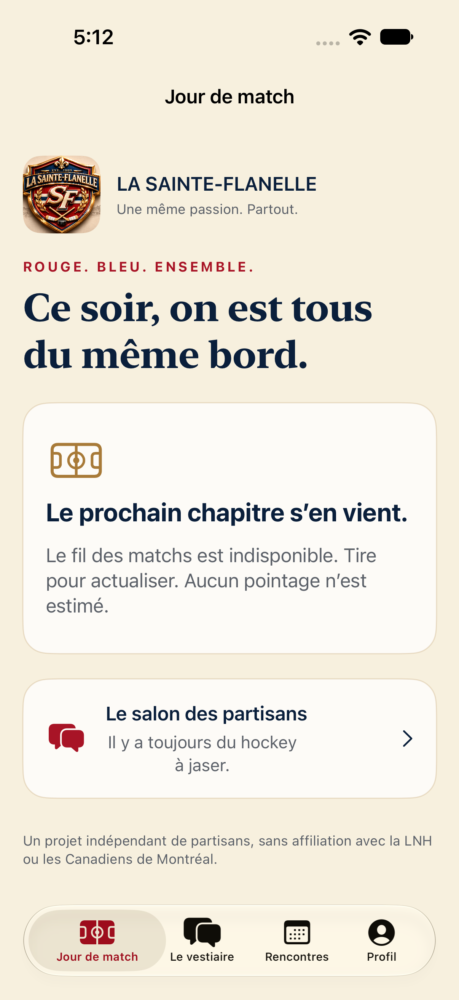
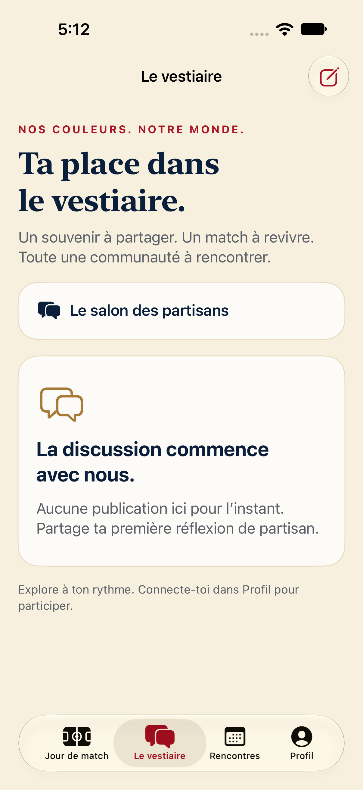
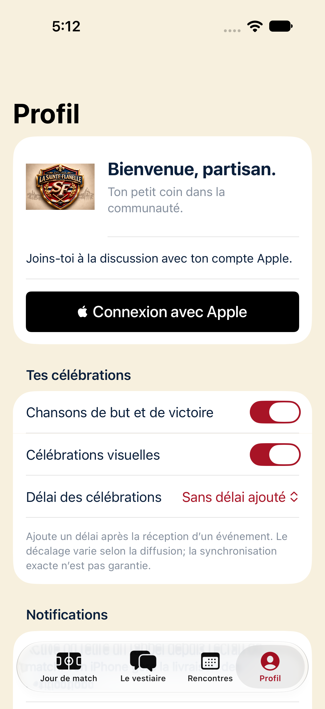

Le vestiaire
Des conversations, des photos et des souvenirs entre partisans. Chaque contribution passe par la modération.
 La Sainte-Flanelle
La Sainte-FlanelleTon vestiaire, où que tu sois. Retrouve les partisans de Montréal, partage tes souvenirs et prépare ta prochaine soirée de match.
Découvrir la communauté ↗App iPhone gratuite · En préparation
Des conversations, des photos et des souvenirs entre partisans. Chaque contribution passe par la modération.
Prépare une rencontre dans un lieu public, participe à une soirée de match et gère tes inscriptions.
Un tableau de pointage natif, des rappels et tes chansons de célébration quand le mode est actif.
Signalement, blocage, approbation des photos et outils de modération. Aucune messagerie privée ni localisation GPS. Les rencontres ont lieu dans des endroits publics.
Lire les règles →Captures réelles de la version de développement. Aucun pointage simulé n’est présenté comme un résultat réel.



L’app n’est pas encore offerte sur l’App Store. La connexion Apple, la source autorisée de données de match et les essais sur iPhone doivent être finalisés. Les alertes de but en arrière-plan ne sont pas activées. Les chansons complètes jouent uniquement dans le mode Soirée de match au premier plan.
Nous joindre →